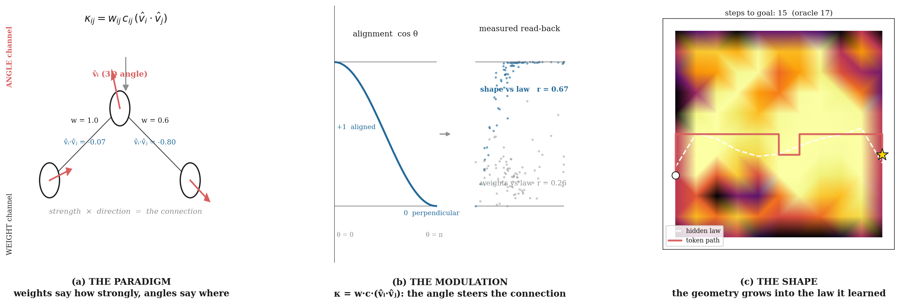
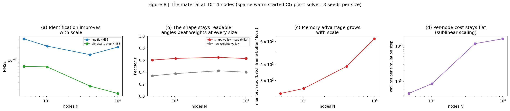
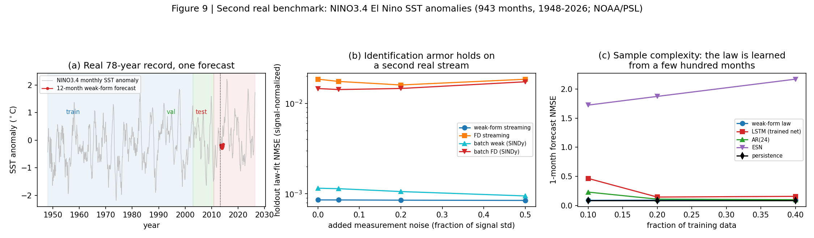

A neural network whose neurons carry angles, not just weights. Weights say how strongly; angles say where — and the two multiply into the connection. The network learns physical laws from noisy local observations with no global loss and no backpropagation, and its angles self-organize into a shape: a readable, mechanistic map of what it learned. Angles are the computation; the shape is the interpretable spectrum.
Research prototype · gradient-free local learning · 2026

The paradigm shift is the angle channel. Weights are not enough — they say how strongly but nothing about where. Every neuron in this network carries a 3D angle that multiplies the weight channel (panel a); alignment steers the connection (panel b); and the geometry that self-organizes is a readable shape — a mechanistic map of the learned law that routes real computation through the material (panel c). Angles are the computation; the shape is the interpretable spectrum.
We introduce a spatially embedded, gradient-free neural architecture whose computation is split across two channels: scalar weights (identified per-edge, in-stream, by a recursive least-squares loop fed by an IIR spacetime weak form that throws derivatives off noisy data and onto an analytical test function) and a 3D angle channel (a chemical-gated nematic consensus that rotates each neuron's structural vector toward its neighbors). The two multiply: \(\kappa_{ij} = w_{ij}\,c_{ij}\,(\hat{\mathbf v}_i\!\cdot\!\hat{\mathbf v}_j)\) — weights say how strongly, angles say where. The emergent shape is not decoration: it is a spatially coherent, denoised readout of the learned mechanism (r = 0.64 vs 0.35 for the raw weights), and routing through the material fails without it. On two independent real records — the 277-year sunspot series and the 78-year El Niño SST index — the same frozen streaming identifier generalizes to unseen decades at 481× and 22× lower holdout error than finite-difference identification, stays flat under 50% added measurement noise, and at 10% of the ENSO data beats a trained LSTM 5.3× at one-month forecasts while the reservoir collapses. The network scales to 104 nodes (identification improving with size, per-node cost sublinear, ~630× less memory than a reservoir), with four theorems — noise floor, contraction, monotone self-organization, and closed-loop stability — verified numerically. Angles are the computation; the shape is the interpretable spectrum.
TL;DR: we use angles now. A neural network with two compute channels — scalar weights (strength) and 3D angles (direction) — where the angles multiply the weights into the connection. It learns laws from noisy streaming observations with no backprop, its angles grow into a readable shape — a map of the law — and it plays a maze it never saw. Every number on this page is measured and reproduced from the committed result files.
Modern deep learning is a data-center computation: training needs a global loss, a backward pass, and a GPU farm — then the trained weights are shipped to a device that can only run them, never learn. It is also a scalar computation: a weight is a number, so a network is a bag of numbers — inscrutable until someone attaches a microscope to it. This architecture is built the other way around: every neuron carries an angle, the angles are computation, and the geometry they form is the mechanism you can read. Every update is strictly local and streaming, so the same network that uses the world can learn from it, continuously, where it lives. The measured capabilities below are the directions this opens — each card pairs a measured result with the world it points at.

No global loss, no backward pass, no label. A robot, sensor, or phone could learn from its own stream of experience — forever, on-device, in real time — instead of shipping data to a cluster and weights back.

10,000 nodes learn at ~0.1 seconds per step on a laptop CPU, with ~630× less memory than a reservoir. Learning without a GPU — the compute that currently gates who gets to train AI.

You watch what it learned — the geometry grows into the law (r = 0.64 vs 0.35 for raw weights). For safety-critical AI, inspectability is the architecture, not a post-hoc tool.

Two real physical records — solar activity and El Niño — identified at 481× and 22× lower holdout error than finite differences, flat under 50% added noise, and 5.3× better than a trained LSTM at 10% of the data. Climate, materials, biology: the law extraction regimes where data is scarce and dirty.

Strictly local, O(E)-per-step updates are the update rule of physical hardware — analog circuits, neuromorphic chips. This is the paper's roadmap: the same weak form, running on real voltages.

The identical identifier — unmodified — transfers across two independent physical systems and routes a maze it never saw at exactly oracle-level steps. Transfer measured, not assumed.
These are the directions the architecture opens — not claims it has met. Every number on this page is measured; every vision above it is a measured capability pointed at a problem. The honest boundary is stated in the papers: the same long-horizon forecast gap every derivative-law learner faces, and a hardware demo that remains the decisive next experiment.
Two channels of computation. Each neuron carries three state variables: an activation \(u_i\), a slow chemical state \(c_i\), and a 3D structural vector \(\hat{\mathbf v}_i\). The weight channel is identified locally and in-stream. Instead of finite-difference derivatives — which amplify noise by \(2\sigma^2/\Delta t^2\) — the network integrates against a localized exponential test function \(\psi(s)=\lambda e^{-\lambda s}\), throwing the derivative off the noisy data and onto the known, clean test function (an IIR spacetime weak form). A per-node recursive least-squares loop then contracts the local coupling law at the observation-noise floor:
The angle channel is a deterministic nematic consensus: each structural vector rotates toward the coupling-weighted mean of its neighbors, gated by the chemical field so geometry grows only where the chemistry potentiates it:
The channels meet in the effective connection — weights say how strongly, angles say where:
The result is a material that learns its own physics and then grows into it — the emergent shape is a spatially coherent, denoised readout of the mechanism the weights encode edge-by-edge in multicollinear noise.

Controlled baselines (streaming-global RLS, batch weak-form SINDy, finite-difference RLS), a full ablation, 15 seeds, and a playable maze: each mechanism earns its place, and the two channels are complementary — each alone is unreliable; the composed material is not.
held-out NMSE 0.038 ± 0.009 vs 0.339 for the best streaming-global RLS (15 seeds)
positive-transmission seeds with the learned geometric channel on → off
seeds where learned geometry raises axial corridor transmission
corr(shape, discovered law) vs 0.08 for raw weights — geometry denoises the mechanism


The 277-year sunspot record (SILSO). The identification layer, unmodified, runs on 3,331 real monthly observations (1749–2026), delay-embedded as a ring of 24 lag nodes. The law is frozen after training and evaluated on an unseen 27-year window (1991–2023); hyperparameters are tuned only on a validation window and nothing downstream is retrained. The weak form identifies the hidden law at 481× lower holdout error than finite-difference streaming, flat under 50% added measurement noise.
Forecast NMSE by horizon, held-out 1991–2023. The
honest boundary, stated plainly: the weak form is a derivative law — it beats every
finite-difference identification at every horizon and persistence at 1 month, while AR/ESN/LSTM, which
fit the level directly, lead at long horizons. Numbers from real_benchmark.json.
| horizon | weak form (this work) | FD streaming | batch weak | batch FD | AR(24) | ESN | LSTM | persistence |
|---|---|---|---|---|---|---|---|---|
| 1 mo | 0.116 | 0.260 | 0.117 | 0.187 | 0.095 | 0.096 | 0.093 | 0.119 |
| 6 mo | 0.197 | 0.627 | 0.204 | 0.309 | 0.135 | 0.133 | 0.130 | 0.193 |
| 12 mo | 0.296 | 1.310 | 0.310 | 0.527 | 0.177 | 0.166 | 0.170 | 0.284 |
| 24 mo | 0.607 | 5.449 | 0.628 | 1.561 | 0.282 | 0.251 | 0.289 | 0.578 |
A second real stream — El Niño SST (ENSO). The protocol, unchanged, on the NINO3.4 monthly sea-surface temperature anomaly index (943 real observations, 1948–2026; NOAA/PSL) — a different physical system, no re-tuning. The armor transfers (22× below FD, flat under 50% noise), the deep-learning boundary flips (weak beats the trained LSTM at 6- and 12-month forecasts), and the sample-complexity gap is the headline: at 10% of the data the weak-form law is 5.3× better than the trained LSTM at one-month forecasts (0.087 vs 0.464) while the reservoir collapses (1.73).
vs finite-difference streaming on sunspots and ENSO; flat under 50% added noise on both
one-month NMSE at 10% of the data (0.087 vs 0.464); wins 6- and 12-month forecasts at full data
vs 1.25 MB reservoir at comparable or better long-horizon behavior
exponential forgetting adapts to the recent regime on both real records
The dense plant solver is O(N3) per step; a sparse warm-started conjugate-gradient solve (the relaxation a physical network performs, exact to 1e-9 and verified identical to the dense solve) makes the step O(E). From 484 to 10,000 nodes: identification improves with scale (law-fit 0.032 → 0.020), the shape stays readable at every size (r = 0.60–0.65 vs 0.34–0.42 for the raw weights), the memory advantage grows (~240× → ~630×), and per-node cost is sublinear. The honest limitation: the corridor-routing contrast saturates at 103–104 nodes.
Four theorems with proofs in the paper and numerical verification in
theory.json:
(T1) Noise floor. The weak-form derivative estimate has variance converging to \(\lambda^2\sigma^2\), independent of the sampling interval — while finite differences amplify as \(2\sigma^2/\Delta t^2\). Measured: a 2.2×105× gap at dt = 10−3, ratios 0.998–1.000 against theory.
(T2) Contraction. Streaming RLS contracts under persistence of excitation, with tracking error linear in the law-drift rate — a 238× reduction, halved in 5 samples.
(T3) Monotone self-organization. Angulation is monotone ascent on the alignment functional: alignment rises 0.511 → 0.878, never decreasing.
(T4) The closed loop. Morphogenesis is the contraction plus an O(ηe) perturbation — the shape grows while identification is perturbed by only ~7%.
Python 3.9+; only numpy, matplotlib, and (for the game clip)
Pillow are required. Every paper number is produced by these scripts from the committed
result files.
pip install -r requirements.txt python run_experiments.py --task sweep --seeds 15 --T 4000 --out results.json python run_experiments.py --task ablation --seeds 8 --T 4000 --out ablation.json python run_experiments.py --task scale --seeds 5 --T 4000 --sizes 7x7,11x11,15x15 --out scaling.json python scale_large.py --sizes 22x22,32x32,64x64,100x100 --seeds 3 --T 1500 --out scaling_large.json python real_benchmark.py --dataset sunspot --out real_benchmark.json python real_benchmark.py --dataset enso --out real_benchmark_enso.json python theory.py python flowgame.py --episodes 4 --out game # the maze game + animated clip python make_figures.py # paper figures 1-9 python make_paradigm_fig.py # the angle-paradigm hero figure python test_biomaterial_net.py # 12 sanity tests
See the repository for
the full README, methods, baselines, and eight documented failure modes. LaTeX sources for both papers
(nmi_paper.tex, ieee_paper.tex) are included and regenerate with
pdflatex.
@article{singh2026morphogenetic,
title = {Morphogenetic Bi-Modal Networks: Two Channels of Computation -- Weights and Angles},
author = {Singh, Sehaj},
year = {2026},
note = {Gradient-free local learning; IIR spacetime weak form; angle-channel morphogenesis},
url = {https://github.com/sehajr-singhs/morphogenetic-bimodal-networks}
}